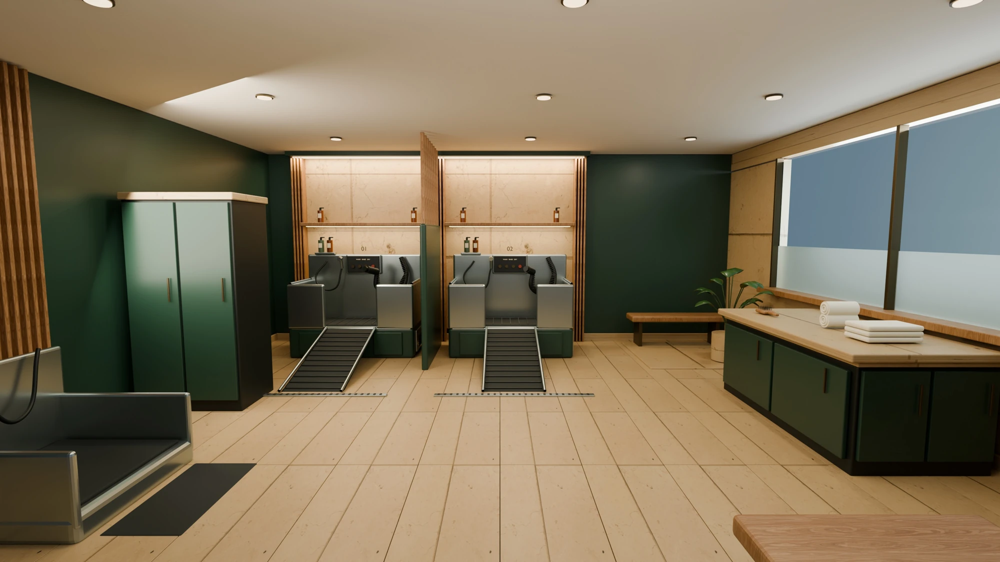
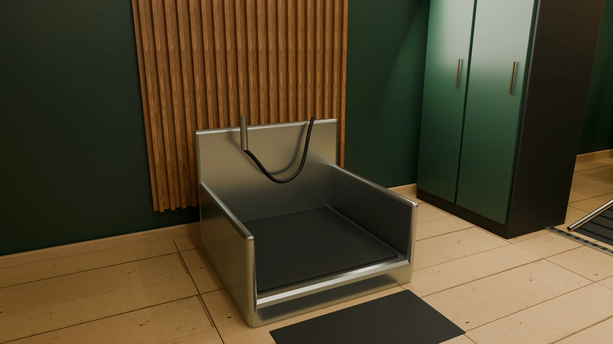

Open with two integrated bays.
One centralized spa near the return route from outdoor pet access. Keep washing and powered drying together; provide a separate towel-and-brushing counter.
A RESIDENT AMENITY CONCEPT
A considered pet-care amenity for downtown East Lansing. Wash and dry in one bay. Make a quick stop for paws after the walk. Essentials included.
Explore the roomPrepared by Mel Tucker · AVC
Concept study · October 2026

THE RECOMMENDATION
Give residents a place to wash and dry their pets in one bay, with a quick paw rinse on the way home. Include essential supplies in the amenity.
One centralized spa near the return route from outdoor pet access. Keep washing and powered drying together; provide a separate towel-and-brushing counter.
Compare a 360 sq ft compact room with a 528 sq ft premium room. The premium plan reserves an alcove for a possible third bay.
Compare the two footprints ↗Two reference wash/dry units start at a published $24,500 before options, freight, tax and installation. Room construction still needs a project-specific quotation.
See the cost evidence ↗01 / STEP INSIDE
Start at the entrance. Explore the wash bays and finishing counter through three views of the same premium room.
Premium 528 sq ft concept · Three rendered viewpoints
A DEDICATED PLACE FOR PET CARE
A low paw rinse near entry, a place for coats and supplies, and a clear route to the full wash bays.
The opening images and three rendered 360° stops come from one detailed room model. The layout view uses optimized geometry from that same scene and allows free movement and a third-bay study. The tour shows the premium 528 sq ft concept. Equipment, access and room dimensions remain subject to supplier and building-team coordination.
02 / THE WORKING PLAN
Both plans start with two integrated wash/dry bays and a paw rinse. The premium room adds breathing room and a reserved third-bay option.
03 / HOW MANY STATIONS?
Two bays are our opening recommendation. Pet ownership, use patterns and drying time determine when another bay becomes useful.
400 apartments · 25% dog households · one on-site bath per month · 45-minute cycle.
500 apartments · 35% dog households · 1.5 baths per month · concentrated peak use.
The higher-demand case with 60-minute occupancy exceeds the reserved third-bay option.
These are modeled scenarios, using stated assumptions. They are not measured resident demand or a required apartment-to-station ratio.
SUGGESTED FULL WASH BAYS
2Retain two bays and preserve the expansion alcove.
Recommendation includes a two-bay minimum chosen for this concept. All demand inputs, availability and utilization targets are planning assumptions. Quick-rinse traffic is excluded.
Monthly washes = apartments × dog-household share × on-site baths per dog household. Peak washes = monthly washes × peak share. The starting 45-minute cycle assumes 15 minutes of washing, 20 of drying and 10 of arrival/reset. These are adjustable assumptions. Per-bay effective peak slots = 4.345 weeks/month × peak hours/week × 60 ÷ occupied minutes × availability. Bay count = peak washes ÷ effective slots ÷ chosen utilization ceiling, rounded up, with a two-bay concept minimum.
This is a capacity sensitivity model. It does not predict queues, arrival bursts, booking behavior, paw-rinse demand, multiple-dog patterns or resident adoption. Review pet policy and comparable property usage, then track booking delays after opening. No authoritative apartment-to-wash-bay ratio was identified in the sources reviewed.

DESIGNED AROUND THE RETURN HOME04 / EAST LANSING, ALL YEAR
Place the paw-rinse zone along the conditioned return path from outdoor pet access. Contain snowmelt and salt residue near entry, then provide towel drying before residents head upstairs.
Operations focus: entry mats, frequent wet-floor checks, towel replenishment and a clear path to the lifts.
The building's actual entry, glazing and outdoor pet route remain to be established. Season controls adjust the 3D lighting and this operating brief.
EQUIPMENT / A REFERENCE TO PRICE
Use these as supplier candidates. Rendered equipment is conceptual; approve current submittals and service access before fixing the design.
Integrated wash, metered products and powered drying. The linked manual documents factory Free Mode for included resident use.
$12,250 starting equipment price / unit
Two units: $24,500 before options, tax, freight and installation. Confirm the current microbubble-equipped model’s cut sheet. Manufacturer supply restrictions affect replenishment and warranty.
View manufacturer details ↗Integrated dryer and several control variants. Published overall size is 93.5″ × 27.5″ × 78.7″; the wash-basin size is smaller. Allow for the whole machine, ramp and service space.
Supplier quote required. Larger frontage may change the room layout.
View manufacturer catalog ↗Free resident-use controls, integrated fur dryer and hair-straining system. Management supplies ready-to-use soap or residents bring it, per the product page.
Supplier quote required. Compare replenishment, service support and ease of use.
View manufacturer details ↗Checked October 29, 2026. A reference configuration is a planning basis. No equipment order or final procurement selection has been made.
06 / AN INVESTMENT TO TEST
PUBLISHED REFERENCE EQUIPMENT / TWO UNITS
$24,500
Evolution mini starts at $12,250 per unit. That is a documented equipment starting price; options, freight, tax and installation are additional. Room construction requires a separate, project-specific quotation.
Excludes land, base-building shell, tax, finance, structural work and major service relocation. Architect/contractor must define shared base-building scope, permits and fire-protection work to avoid omissions or double counting.
The premium room carries an illustrative $120k–$220k total allowance, including equipment and contingency. It has not been validated by a local contractor. The compact room remains unpriced; construction is not scaled down by floor area.
Download the pricing scope ↗| Scope | Low | High |
|---|---|---|
| Integrated wash/dry + rinse equipment | $30,000 | $42,000 |
| Plumbing, drainage & waterproofing | $20,000 | $40,000 |
| Finishes & partitions | $25,000 | $45,000 |
| Electrical, ventilation & acoustic work | $10,000 | $22,000 |
| Cabinetry, storage & accessories | $8,000 | $18,000 |
| Design & commissioning | $8,000 | $15,000 |
| Subtotal | $101,000 | $182,000 |
| 20% concept contingency | $20,200 | $36,400 |
| Total planning allowance | $121,200 | $218,400 |
Optional retail/vending fit-out: separate assumed $3,000–$8,000 allowance, pending supplier quote. A third bay has a separate assumed installed allowance of $18,000–$30,000, subject to a supplier and MEP quote. It is excluded from the two-bay total.
Evolution lists the mini at $12,250 starting equipment price when checked October 29, 2026. Two reference units start at $24,500 before options, freight, tax or installation. The $30,000–$42,000 equipment allowance also reserves an assumed amount for paw rinse and accessories. Obtain a complete supplier quotation.
Illustrative monthly operating scenario: 20 incremental staff hours × $30 loaded hourly cost = $600; consumables $200; laundry $150; utilities/service reserve $150. Total $1,100/month, or $2.75 per apartment at 400 units. Every input is an assumption; obtain staffing and service quotes. Supplies and laundering are recurrent obligations.
The pricing scope is ready for supplier and contractor review. No quote requests have been sent.
FROM CONCEPT TO A REAL ROOM
Confirm the pet-entry route and room allocation. Select equipment with the architect, test the operating plan with management, and obtain a local cost plan. The concept can then follow the actual floorplate.
Research checked October 29, 2026. The building facts come from the project brief and remain unverified. Station count, room area, costs, use patterns and proposed features are concept recommendations or assumptions.
The 3D model, plan and images communicate a concept. They are unsuitable for permitting or construction. Equipment geometry and animal entry ramps are schematic; final equipment selection must resolve accessible operating positions, entry, service access and clearances. The current perspective images, 360° views and optimized planning model derive from one master scene. All remain conceptual; equipment and building design require coordination.